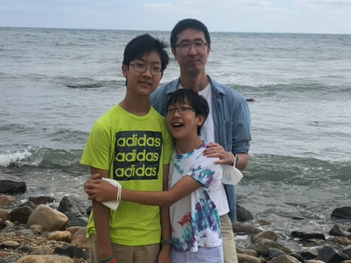
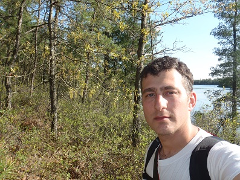
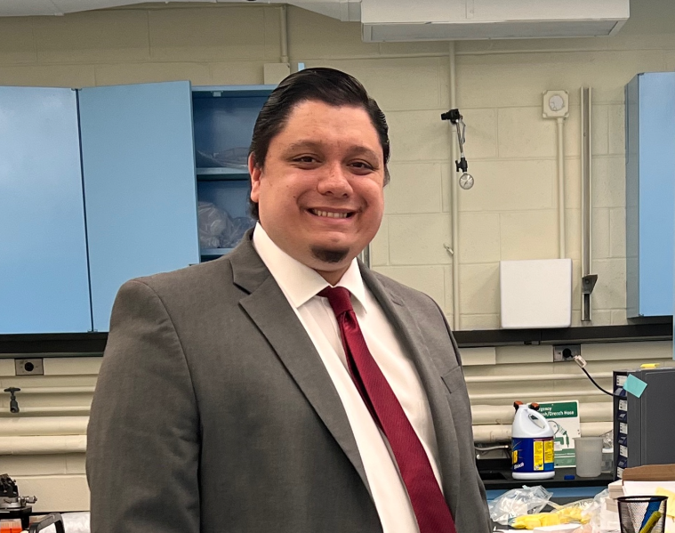
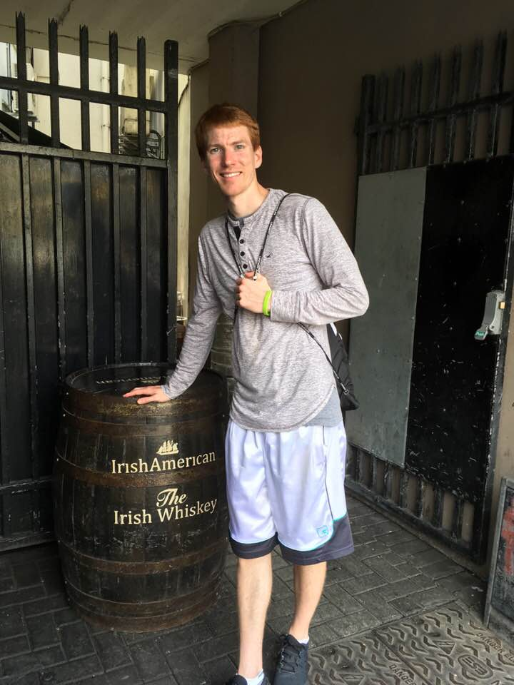
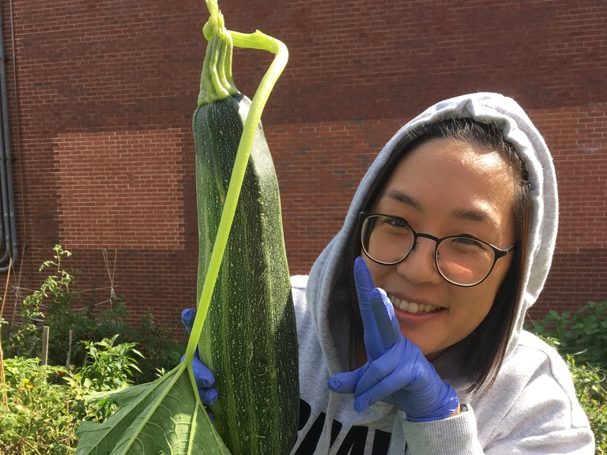
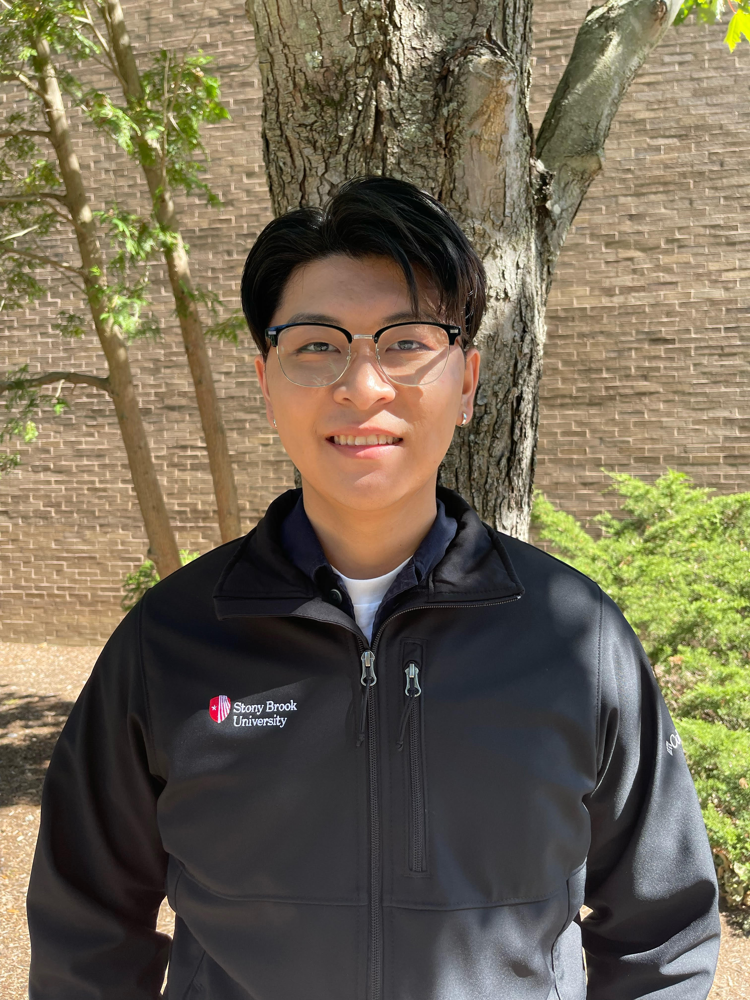
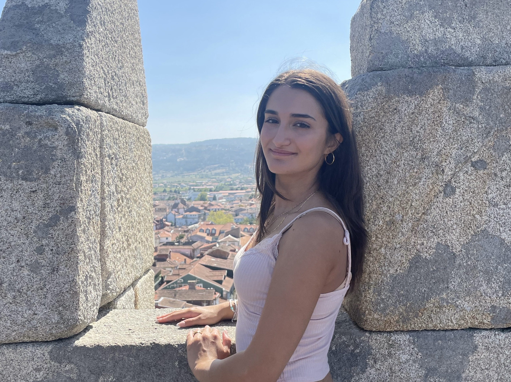
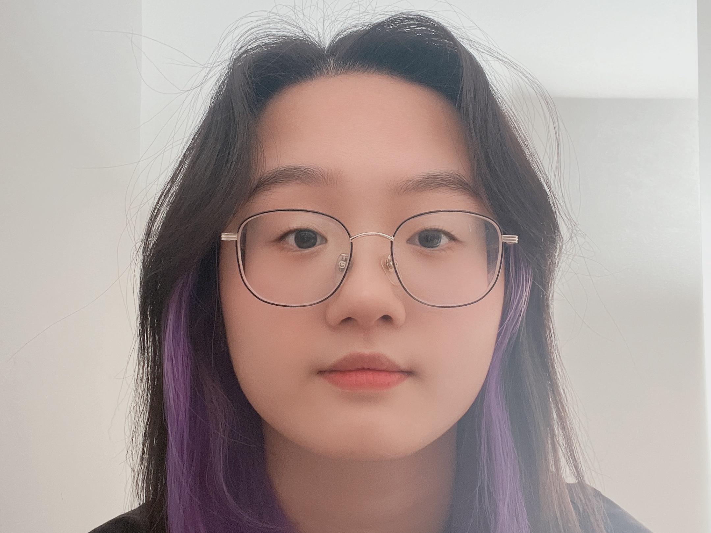

Principal Investigator

- Hwan Kim Ph.D.
- I am a microbiologist by training at the University of Chicago and Howard T. Ricketts Laboratory (many thanks to Drs. Schneewind and Missiakas!). I enjoy working with pathogenic microbial organisms and understanding various aspects of pathogenesis, immune evasion mechanisms, host immunity, and host-pathogen-vector interactions. I hope that our research provides insights into the development of vaccines and therapeutics for microbial pathogens of public health importance. Outside the laboratory, I enjoy eating delicious Asian food, reading science fiction books, playing video games with my sons, and watching superhero movies with my wife.
Research Assistant Professor

- Ilia Rochlin Ph.D., Center for Infectious Diseases
- I was trained as an entomologist and epidemiologist at Cornell University and Touro College, respectively. I have worked at various capacities as a bacteriologist through laboratory director for state and local public health agencies investigating mosquito and tick-borne diseases within the eco-epidemiological framework as a complex system of interacting environmental, social, and biological factors. My work has encompassed a broad range of subjects from molecular biology and virology to entomology, ecology, and sociology. The common denominator among these diverse interests is the focus on public health driven by a quantitative approach and statistical modeling. My professional interests overlap with my long standing fascination with "old fashioned" natural history and pursuits in macrophotography.
E-mail: ilia.rochlin at stonybrook.edu
Postdoctoral Associate

- Cody Kempen, Ph.D., Co-mentored under Dr. Pawan Kumar
- During my doctoral studies, I was trained as a mucosal immunologist in the lab of Dr. Pawan Kumar, at Stony Brook University. My dissertation research focused on the role IL-17 signaling to Paneth cells plays in regenerating the intestinal epithelium post irradiation induced injury. Prior to my doctoral studies, I received my MS in Pharmaceutical Sciences at Albany College of Pharmacy and Health Sciences. There, I studied mechanisms of lung epithelial cell death in response to Ricin toxin under the guidance of Dr. Timothy LaRocca. Throughout my scientific career, I have been interested in host responses to injury, toxicity, and infection. My postdoctoral work aims to elucidate the importance of IL-17 and IL-22 signaling during Rickettsia infection. In the future, I hope to build a career teaching and inspiring the next generation of scientific minds. During my free time I enjoy traveling with my wife, watching sports (go NY Giants!), reading fantasy and science fiction novels, and watching movies.
Graduate Students

- Luke Helminiak, B.S., Molecular Genetics and Microbiology
- I received my B.S. in Molecular Biology and Biochemistry from the University of Wisconsin Eau Claire. I then went and worked at the Next Generation Sequencing Laboratory at the Mayo Clinic in Rochester MN. For my dissertation, I study Rickettsia pathogenesis with a focus on hemolysin secretion and function. Following my graduation, I aim to work on infectious disease diagnostics and have the opportunity to have a direct role in helping patients. Thus, my goal is to work as a Laboratory Director in a clinical microbiology laboratory. I have a love of sports, and enjoy running, basketball, snowboarding, and archery. During my down time, I love listening to music and watching movies.
E-mail: luke.helminiak at stonybrook.edu
- Smruti Mishra, M.S., Molecular Genetics and Microbiology
- I am from Bhubaneshwar, India. I did my bachelor’s in Dental Surgery from Pravara Institute of Medical Sciences, India and my MS in Molecular Biosciences from Albany College of Pharmacy and Health Sciences. While at ACPHS I worked in Dr. Meenakshi Malik’s lab using an in vitro bioreactor infection model to study the evolution of daptomycin resistance in methicillin-resistant Staphylococcus aureus. For my PhD thesis I am working on understanding the contribution of polysaccharide synthesis operon on tick-borne rickettsiosis as well as its role in shaping host immunity. My research interests lie in the field of bacterial pathogenesis and infectious diseases, specifically in understanding the host-pathogen interactions and molecular mechanisms involved in the same. In my free time I love travelling and exploring new places with my husband and learning to cook new Indian dishes. I enjoy watching movies and dancing as well.
E-mail: smruti.mishra at stonybrook.edu
Lab Manager

- Hara Seo, B.S.
- I have an interesting academic background where I fell in love with Music in my youth but learned the beauty of Chemistry as an undergraduate student. Interestingly, this unusual learning experience helped me raise two little monsters and sourdough starters! Over time, I became a microbiologist by self-teaching about the mysteries of sourdough baking. I started my career as an administrative assistant to the director of Howard T. Ricketts Laboratory at Argonne National Laboratory. Since moving to Stony Brook, I am learning whole new knowledge about tick-borne Rickettsia. I am quite excited about this new journey! And, I enjoy baking, listening music, and spending time with one big and two little monsters.
E-mail: hara.seo at stonybrook.edu
Research Technicians

- Justin Le, B.S.
- I am currently a senior majoring in biochemistry and hope to apply to medical school in the future. Although I have had some research experience in the past using computational tools to map animal pose estimations, after taking and being a TA for a microbiology course here at Stony Brook, I am excited to start my first wet lab experience in a field I am really interested in! In my free time, I love to play the violin, which I have been doing for over 17 years, play video games, and am currently a cabinet member of the Stony Brook Vietnamese Student Association.
E-mail: justin.le at stonybrook.edu

- Rhyan Mellett, B.S.
- I received a B.S degree in Biology from Coastal Carolina University. During my undergraduate degree, I took part in research on Alzheimer’s disease, using Drosophila melanogaster as the disease model. My research primarily focused on designing and generating 3-D printed courtship behavior mazes, which were then employed to test and analyze the behavioral traits of the flies. In my free time, I enjoy going for walks and car rides with my dog Nellie.
E-mail: rhyan.mellett at stonybrook.edu
- Molly Thompson, M.S.
- I received my M.S. in Cellular and Molecular Biology from the University of Maryland. While there, I worked in Dr. Utpal Pal's laboratory studying I. scapularis (deer tick) developmental pathways. I am excited to keep working with ticks, and branching out with both experimental work as well as species of tick! I hope to pursue public outreach and teaching roles in the future. Other than biology, I have a huge interest in classics, especially the Latin language and Roman culture. In my spare time I am often in Pennsylvania visiting my family (including my 5 brothers!).
E-mail: molly.thompson at stonybrook.edu
Undergraduate Students

- Ana Barreira
- I am currently a junior at Stony Brook University. I am majoring in Biology and am planning on applying to medical school. This is my first time participating in research and I’m very excited to become a part of this lab. In my free time I like to read, paint and bake.
E-mail: ana.barreira at stonybrook.edu

- Ivy Lu
- I am currently a sophomore at Stony Brook University, double-majoring in Chemical and Molecular Engineering and Psychology BS. In the future, I plan to apply to medical school, but I’m also considering going into research related to healthcare. Since this is my first time being part of a wet lab, I’m looking forward to learning new skills and interests! In my free time, I love to ice skate, go for walks with my dog, and read fantasy novels/webcomics.
E-mail: ivy.lu at stonybrook.edu

- Kim-Le Tran
- I am currently a junior at Stony Brook University majoring in Clinical Laboratory Science. In the future I plan to go to graduate school and work in a microbiology laboratory at a hospital after I graduate. This is my first time being part of a research lab so I’m excited for all the experiences I will gain. In my free time I love to play piano, violin, and to crochet! I am also part of the Vietnamese Student Association on campus.
E-mail: kim-le.tran at stonybrook.edu
Alumni
- Michelle Bok, Seoul International School (2021-2022), admitted to Dartmouth College (2023)
- Linda Chen, Biology, Stony Brook University (2021-2023)
- Dennis Chu, Biochemistry, Stony Brook University (2021-2023)
- Matthew Gmelin, Research technician (2022-2024)
- JoAnn Mugavero, Stony Brook University (2019-2023)
- Jonni Nazarian, Health Science, Stony Brook University (2021-2022)
- Lydia Sprague, Department of Biomedical Engineering, Stony Brook University (2019-2020), works at Regeneron Pharmaceuticals (2022)
- Kayla Stern, John F. Kennedy High School (2020-2021), admitted to Binghamton University (2022)
- Adhara Tisha, Undergraduate Student, Biology and Psychology, Stony Brook University (2023)
- Wan-Yi Yen, Laboratory of Comparative Medicine (2020-2022)